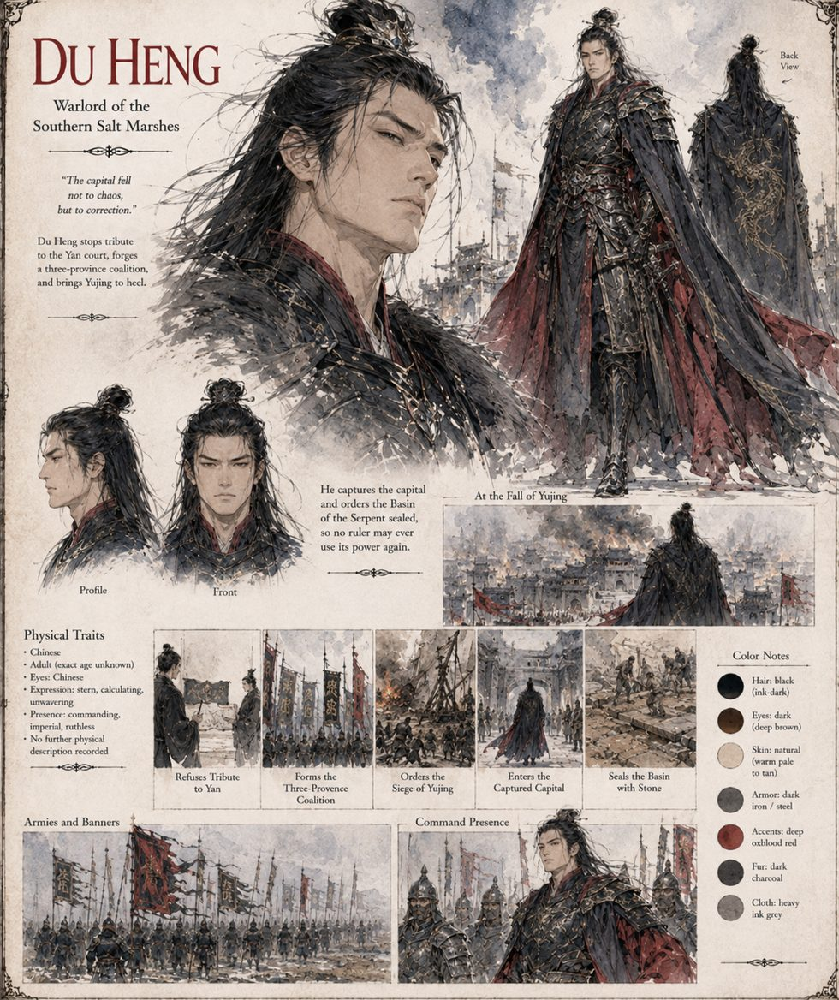

Du Heng
Warlord of the Southern Salt Marshes
Warlord of the salt marshes to the south, who stopped forwarding the province's tribute to the capital and quietly began keeping it well before the Solstice. When the Emperor dies in the basin and the court follows him into it, he stops calling his levies a tax and begins calling them, without apparent irony, a rescue: the throne, he tells his captains, has proved itself unequal to Heaven and therefore to men, and someone competent will need to hold the empire together while the Jade Hall finishes counting its dead. Two more provinces echo him within the season, each by a different justification and the identical conclusion.
He reaches the walls of Yujing at the head of a three-province coalition and refuses every delegation the dwindling court sends, calling the whole thing correction rather than conquest. When the city falls he finds the throne empty and the basin drained a second time, and orders it filled in with stone rather than water — on the grounds, reasonable to absolutely everyone by then, that an empire could not afford a third Emperor discovering the same door. His own scribes write the histories that follow.
“The capital fell not to chaos, but to correction.”
Appears in The Heavenly Thunder-Serpent